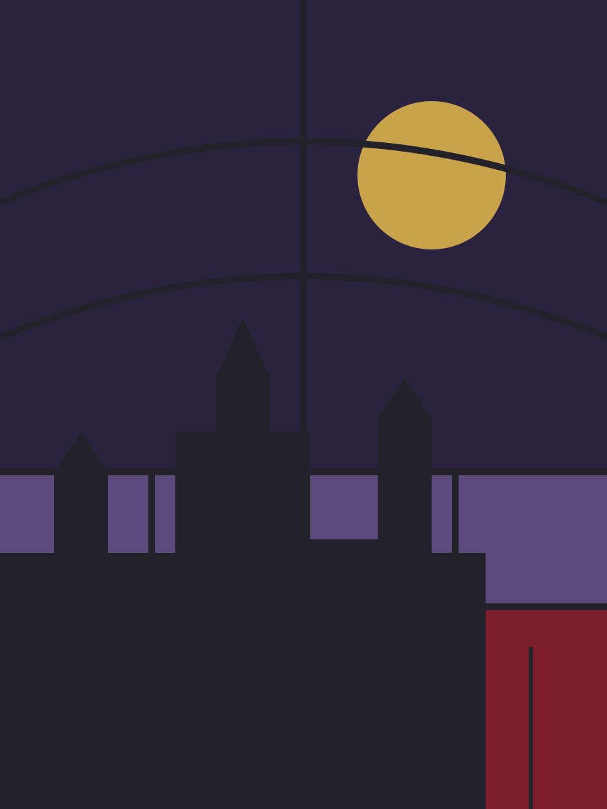

Component
Hero
The opening of a page: a heading at the largest size, a paragraph, one or two buttons, and beside them whatever the template leads with. Every template has its own hero form; this page shows Gothic's, then two variants that move.
Preview
The hero as the overview uses it. The heading takes --font-size-hero; the paragraph is muted and capped at a readable measure.
A retemplate template
Stone by day, candlelight by night.
Pale stone and iron ink, a crimson accent, one pointed arch. After dark the stone goes black and the accent turns to candle gold. The markup is the same as every other template here; only the stylesheets and the art differ.

<section class="hero">
<div class="stack">
<p class="kicker">A retemplate template</p>
<h1>Stone by day, candlelight by night.</h1>
<p class="gothic-initial">Pale stone and iron ink, a crimson accent, one pointed arch. After dark the stone goes black and the accent turns to candle gold. The markup is the same as every other template here; only the stylesheets and the art differ.</p>
<div class="row">
<a class="btn btn-primary btn-lg" href="../index.html">Get started</a>
<a class="btn btn-lg" href="index.html">Browse components</a>
</div>
</div>
<img src="../../assets/hero.svg" alt="" width="900" height="1200">
</section>Variants
Text only
The same hero with nothing beside the words. Add hero-text: the grid becomes one column and the stack is capped at a readable measure. Every template carries this variant with the same class.
Words only
A hero with nothing beside it.
One column, the text measure capped so the lines stay readable, and everything else the hero has: the kicker, the heading at the hero size, the paragraph, the buttons.
<section class="hero hero-text">
<div class="stack">
<p class="kicker">Words only</p>
<h1>A hero with nothing beside it.</h1>
<p>One column, the text measure capped so the lines stay readable, and everything else the hero has: the kicker, the heading at the hero size, the paragraph, the buttons.</p>
<div class="row">
<a class="btn btn-primary btn-lg" href="../index.html">Get started</a>
<a class="btn btn-lg" href="index.html">Browse components</a>
</div>
</div>
</section>Image only
A hero that is one picture, edge to edge, cropped to a wide band. Add hero-image and give it a single <img> (or a <figure>) with a real alt, since there is no heading to say what it is. Every template carries this variant with the same class.
<section class="hero hero-image">
<img src="../../assets/hero.svg" alt="The template's hero picture, filling the width" width="1200" height="500">
</section>The candle
A warm light flickers behind the headline as if from a candle just out of frame: it swells and shrinks in uneven steps, and the letters carry a faint gold glow that trembles with it. It never settles. Add gothic-candle to the hero. Under prefers-reduced-motion the global rule cuts every animation to nothing, so the hero is simply there.
A retemplate template
Read by candlelight.
The light comes from the left and never holds still. It is a radial gradient in candle gold behind the words, stepped through eight opacities that do not repeat evenly, so the eye does not learn the rhythm.
<section class="hero gothic-candle">
<div class="stack">
<p class="kicker">A retemplate template</p>
<h1>Read by candlelight.</h1>
<p class="gothic-initial">The light comes from the left and never holds still. It is a radial gradient in candle gold behind the words, stepped through eight opacities that do not repeat evenly, so the eye does not learn the rhythm.</p>
<div class="row">
<a class="btn btn-primary btn-lg" href="../index.html">Get started</a>
<a class="btn btn-lg" href="index.html">Browse components</a>
</div>
</div>
<img src="../../assets/hero.svg" alt="" width="900" height="1200">
</section>The scribe
The heading and the paragraph are written rather than shown: each line is revealed from left to right at a hand's pace, the heading first and the paragraph after it, as a scribe would set them down. It plays once. Add gothic-scribe to the hero; the global prefers-reduced-motion rule stops it.
A retemplate template
Set down by hand.
The clip on each block moves from the left edge to the right over two seconds, eased so it slows at the ends of lines. The illuminated initial is the first thing on the page to be finished.
<section class="hero gothic-scribe">
<div class="stack">
<p class="kicker">A retemplate template</p>
<h1>Set down by hand.</h1>
<p class="gothic-initial">The clip on each block moves from the left edge to the right over two seconds, eased so it slows at the ends of lines. The illuminated initial is the first thing on the page to be finished.</p>
<div class="row">
<a class="btn btn-primary btn-lg" href="../index.html">Get started</a>
<a class="btn btn-lg" href="index.html">Browse components</a>
</div>
</div>
<img src="../../assets/hero.svg" alt="" width="900" height="1200">
</section>Classes
The rules live in css/global.css: the hero under /* == utilities == */ with the other layout helpers, the variant under /* == hero variants == */.
| Class | Purpose |
|---|---|
.hero | The opening section: a grid of a text stack and, in most templates, a picture or a piece of flare |
.hero .stack | The kicker, heading, paragraph and button row |
.hero .row | The buttons |
.hero.gothic-candle | The flickering light behind the heading and the glow on it |
.hero.gothic-scribe | The heading and paragraph are written left to right, then the buttons appear |
.hero.hero-text | Words only: one column, capped measure (every template) |
.hero.hero-image | Picture only: one image edge to edge, cropped 21:9 (every template) |
Notes
- One
<h1>per page: the hero's heading is it. The kicker above it is a<p>, not a heading. - Above
48remthe hero is two columns, text then picture; below, it stacks. The variant keeps whatever layout its markup implies. - The variant is CSS only. Its animation is declared with
bothfill, so the page is correct before it starts and after it ends, and the globalprefers-reduced-motionrule stops it. - Another template ignores
gothic-candleand shows its own hero; any flare markup inside sits in the template's flare wrapper so a swap can drop it.